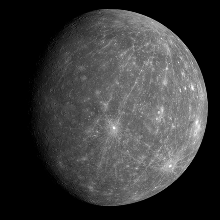

|
Солнечная система — планетная система, включающая в себя центральную звездуСолнце — и все естественные космические объекты, вращающиеся вокруг Солнца. Она сформировалась путём гравитационного сжатия газопылевого облака примерно 4,57 млрд лет назад. Центральным объектом Солнечной системы является Солнце — звезда главной последовательности спектрального класса G2V, жёлтый карлик. В Солнце сосредоточена подавляющая часть всей массы системы (около 99,866 %), оно удерживает своим тяготением планеты и прочие тела, принадлежащие к Солнечной системе. Четыре крупнейших объекта — газовые гиганты — составляют 99 % оставшейся массы (при этом большая часть приходится на Юпитер и Сатурн — около 90 %). Все объекты Солнечной системы, обращающиеся вокруг Солнца, официально делят на три категории: планеты, карликовые планеты и малые тела Солнечной системы. |
ПланетыМеркурий

|
Меркурий — ближайшая к Солнцу планета Солнечной системы, наименьшая из планет земной группы. Названа в честь древнеримского бога торговли — быстрого Меркурия, поскольку она движется по небу быстрее других планет. Её период обращения вокруг Солнца составляет всего 87,97 земных суток — самый короткий среди всех планет Солнечной системы.Ось Меркурия имеет наименьший наклон из всех планет Солнечной системы (около 1/30 градуса).Поскольку атмосферы у Меркурия почти нет, температура его поверхности меняется сильнее, чем на любой другой планете Солнечной системы: от 100 К (−173 °C) ночью до 700 К (+427 °C) днём в экваториальных регионах. Полярные области постоянно охлаждены ниже 180 К (−93 °С). После лишения Плутона в 2006 году статуса планеты к Меркурию перешло звание самой маленькой планеты Солнечной системы. |
|---|---|---|
|
|
12 | 13 |
| 21 | 22 | 23 |
| 31 | 32 | 33 |